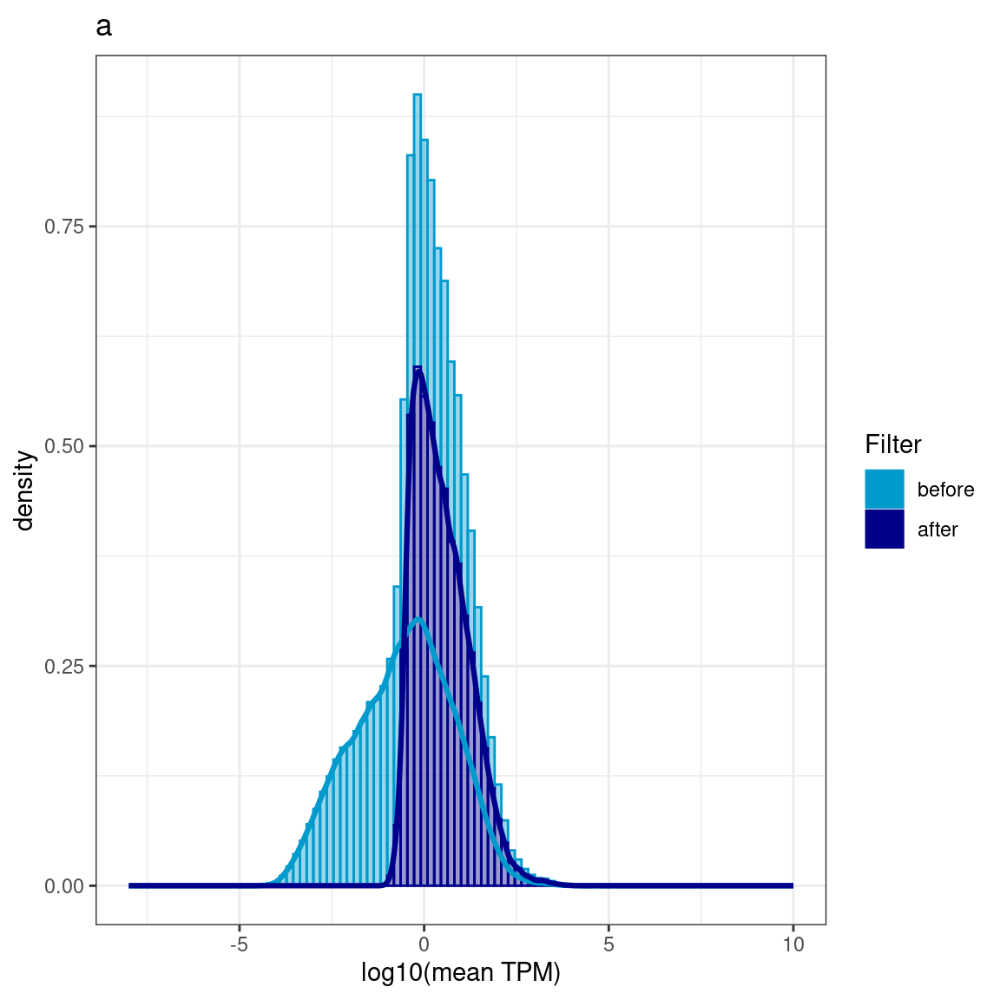
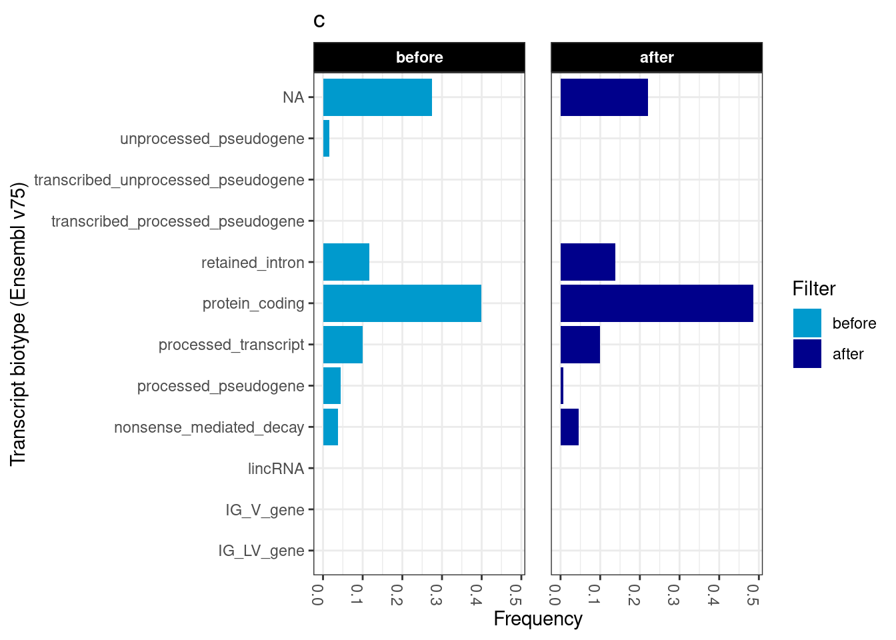
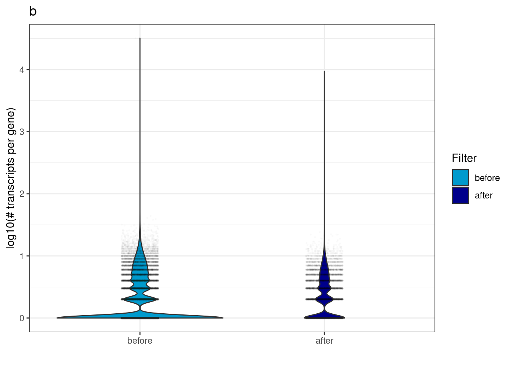
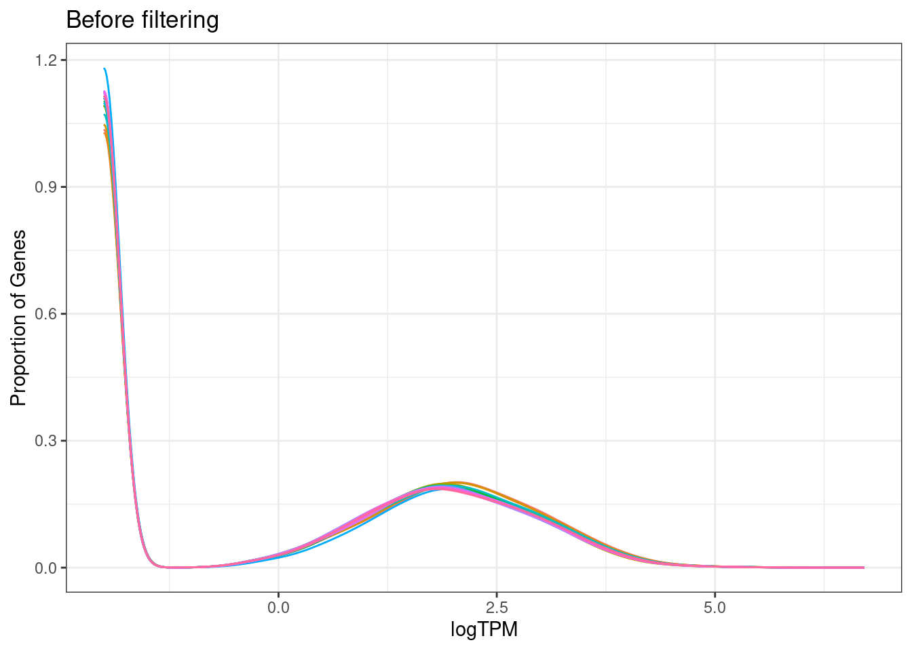
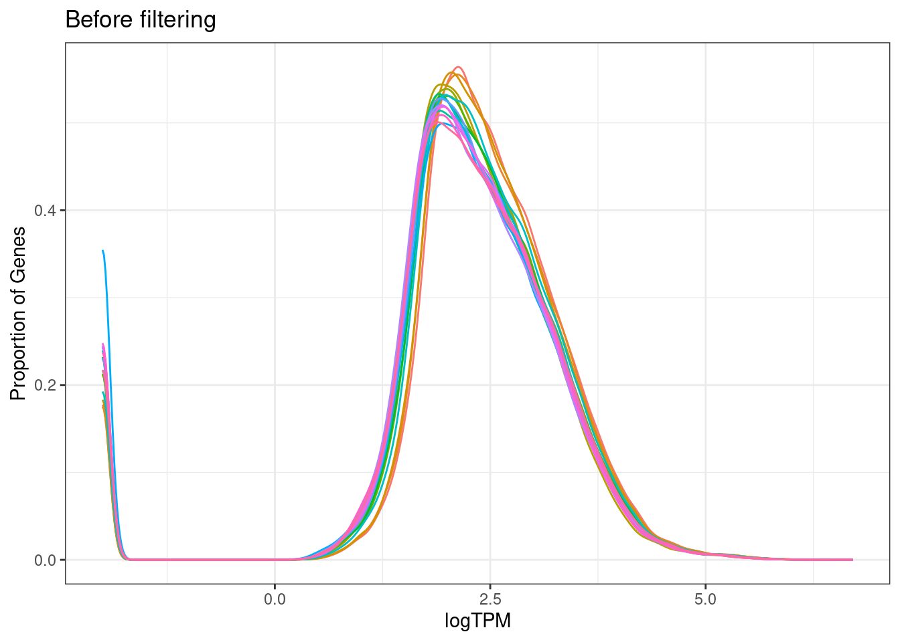
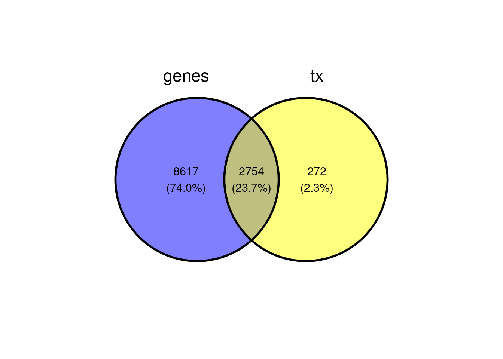
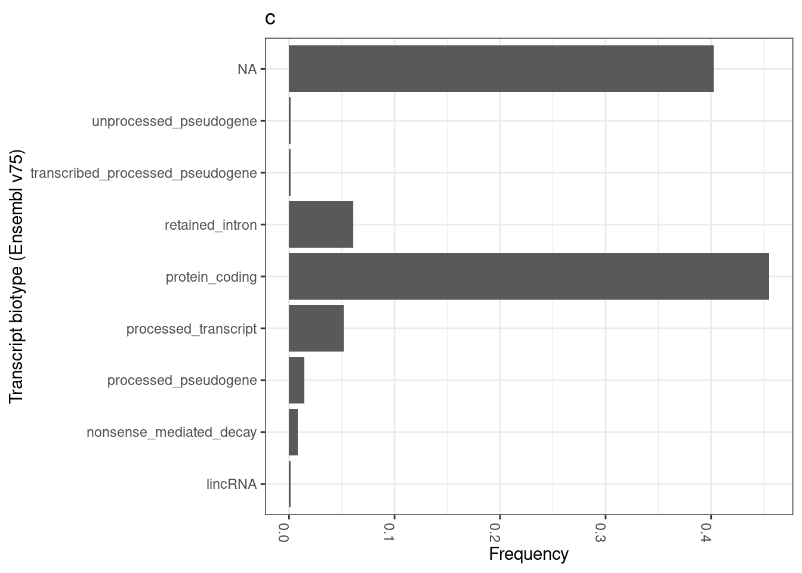
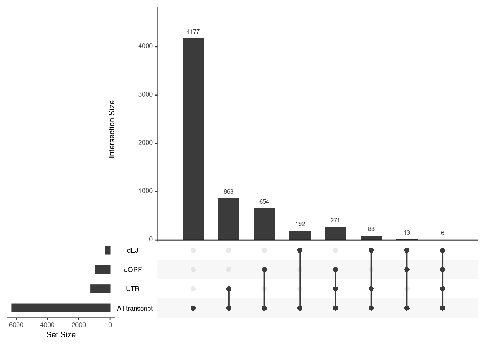
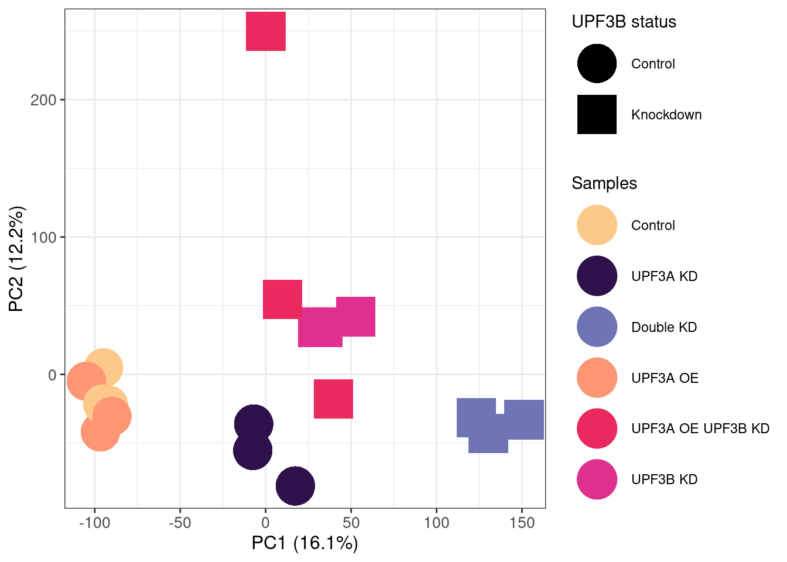

Last updated: 2023-03-27
Checks: 6 1
Knit directory: NMD-analysis/
This reproducible R Markdown analysis was created with workflowr (version 1.7.0). The Checks tab describes the reproducibility checks that were applied when the results were created. The Past versions tab lists the development history.
The R Markdown is untracked by Git. To know which version of the R
Markdown file created these results, you’ll want to first commit it to
the Git repo. If you’re still working on the analysis, you can ignore
this warning. When you’re finished, you can run
wflow_publish to commit the R Markdown file and build the
HTML.
Great job! The global environment was empty. Objects defined in the global environment can affect the analysis in your R Markdown file in unknown ways. For reproduciblity it’s best to always run the code in an empty environment.
The command set.seed(20230314) was run prior to running
the code in the R Markdown file. Setting a seed ensures that any results
that rely on randomness, e.g. subsampling or permutations, are
reproducible.
Great job! Recording the operating system, R version, and package versions is critical for reproducibility.
Nice! There were no cached chunks for this analysis, so you can be confident that you successfully produced the results during this run.
Great job! Using relative paths to the files within your workflowr project makes it easier to run your code on other machines.
Great! You are using Git for version control. Tracking code development and connecting the code version to the results is critical for reproducibility.
The results in this page were generated with repository version 650317e. See the Past versions tab to see a history of the changes made to the R Markdown and HTML files.
Note that you need to be careful to ensure that all relevant files for
the analysis have been committed to Git prior to generating the results
(you can use wflow_publish or
wflow_git_commit). workflowr only checks the R Markdown
file, but you know if there are other scripts or data files that it
depends on. Below is the status of the Git repository when the results
were generated:
Ignored files:
Ignored: .Rhistory
Ignored: .Rproj.user/
Ignored: analysis/Differential-transcript-usage.nb.html
Ignored: analysis/Enichment-analysis-fgsea.nb.html
Ignored: analysis/Enichment-analysis-goseq.nb.html
Untracked files:
Untracked: analysis/Differential-transcript-expression.Rmd
Untracked: analysis/Differential-transcript-usage.Rmd
Untracked: analysis/transcript-preprocessing.Rmd
Untracked: code/external_code/
Untracked: data/LTK_Sample Metafile_V3.txt
Untracked: data/Mus_musculus.GRCm39.105__nifs.tsv
Untracked: data/fastqc/
Untracked: output/DEG-limma-results.Rda
Untracked: output/DEG-list.Rda
Untracked: output/ISAR/
Untracked: output/isoformSwitchAnalyzeR_isoform_AA_complete.fasta
Untracked: output/isoformSwitchAnalyzeR_isoform_AA_subset_1_of_3.fasta
Untracked: output/isoformSwitchAnalyzeR_isoform_AA_subset_2_of_3.fasta
Untracked: output/isoformSwitchAnalyzeR_isoform_AA_subset_3_of_3.fasta
Untracked: output/isoformSwitchAnalyzeR_isoform_nt.fasta
Untracked: output/limma-matrices.Rda
Unstaged changes:
Modified: analysis/DEG-analysis.Rmd
Modified: analysis/Enichment-analysis-fgsea.Rmd
Modified: analysis/Quality-control.Rmd
Modified: analysis/_site.yml
Modified: code/libraries.R
Note that any generated files, e.g. HTML, png, CSS, etc., are not included in this status report because it is ok for generated content to have uncommitted changes.
There are no past versions. Publish this analysis with
wflow_publish() to start tracking its development.
Over here I will go through various preprocessing steps for filtering transcripts
source("code/libraries.R")
source("code/functions.R")
salmon.files = ("/home/neuro/Documents/NMD_analysis/Analysis/Results/Quantification/Salmon/bootstraps")
md.files = "data/LTK_Sample Metafile_V3.txt"
# Loading data
txdf = transcripts(EnsDb.Mmusculus.v79, return.type="DataFrame")
tx2gene = as.data.frame(txdf[,c("tx_id","gene_id", "tx_biotype")])
salmon = list.files(salmon.files, pattern = "transcripts$", full.names = TRUE)md = read.table(md.files, header= TRUE)
md$Group = factor(md$Group)
rownames(md) = md$Sample
colnames(md)[1] = c("sample")
md %<>% mutate(path = salmon)
all_files = file.path(salmon, "quant.sf")
names(all_files) <- paste(c(212:229))
txi<- tximport(all_files, type="salmon", txOut=TRUE,
countsFromAbundance="scaledTPM", tx2gene = tx2gene, ignoreTxVersion = TRUE, ignoreAfterBar = TRUE)reading in files with read_tsv1 2 3 4 5 6 7 8 9 10 11 12 13 14 15 16 17 18 Before and after filtering
txdf = transcripts(EnsDb.Mmusculus.v79, return.type="DataFrame")
tx2gene = as.data.frame(txdf[,c("tx_id","gene_id", "tx_biotype")])
## Get rid of versions id from transcript id
txi[c(1,2,4)] = lapply(txi[c(-3, -5)], function(x){
x %>% as.data.frame() %>%
rownames_to_column("tx") %>%
mutate_at(.vars = "tx", .funs = gsub, pattern = "\\.[0-9]*$", replacement = "") %>%
column_to_rownames("tx")
})## Filtering threshold
keep = (rowSums(txi$abundance >= .5) >= 3)
before = txi$abundance %>% as.data.frame() %>%
mutate(rowMeans = rowMeans(.)) %>%
rownames_to_column("tx_id") %>%
left_join(tx2gene, by = "tx_id") %>%
group_by(gene_id) %>% mutate(ntx = n()) %>%
dplyr::select(gene_id, tx_id, tx_biotype, rowMeans, ntx)
after = txi$abundance[keep,] %>% as.data.frame() %>%
mutate(rowMeans = rowMeans(.)) %>%
rownames_to_column("tx_id") %>%
left_join(tx2gene, by = "tx_id") %>%
group_by(gene_id) %>% mutate(ntx = n()) %>%
dplyr::select(gene_id, tx_id, tx_biotype, rowMeans, ntx)
df <- gdata::combine(before, after) %>% dplyr::rename(Filter=source)
dplyr::group_by(df,Filter) %>% dplyr::summarise(median(rowMeans),sd(rowMeans))# A tibble: 2 × 3
Filter `median(rowMeans)` `sd(rowMeans)`
<fct> <dbl> <dbl>
1 before 0.0435 173.
2 after 2.20 285.ntxInfo <- df %>% dplyr::group_by(Filter) %>%
dplyr::distinct(gene_id,.keep_all = TRUE)
biotypeCount <- df %>% dplyr::group_by(Filter) %>%
dplyr::count(tx_biotype) %>%
mutate(sum=sum(n),frac = n / sum(n)) ggplot(df, aes(x = log10(rowMeans), col = Filter)) +
geom_histogram(aes(y = ..density.., fill = Filter), alpha = 0.4, bins = 100) +
geom_density(size = 1.1) +
scale_x_continuous(name = "log10(mean TPM)", limits = c(-8,10)) +
theme_bw() +
scale_color_manual(values = c("deepskyblue3", "darkblue"))+
scale_fill_manual(values = c("deepskyblue3", "darkblue"))+
labs(title = "a")Warning: Using `size` aesthetic for lines was deprecated in ggplot2 3.4.0.
ℹ Please use `linewidth` instead.Warning: The dot-dot notation (`..density..`) was deprecated in ggplot2 3.4.0.
ℹ Please use `after_stat(density)` instead.Warning: Removed 35586 rows containing non-finite values (`stat_bin()`).Warning: Removed 35586 rows containing non-finite values (`stat_density()`).Warning: Removed 4 rows containing missing values (`geom_bar()`).
Log10 of the mean CPMs (counts per million) over all samples before and after filtering out low-expressed transcripts and genes
ggplot(subset(biotypeCount, frac >= 0.001), aes(x = as.factor(tx_biotype), y = frac, fill = Filter)) +
geom_bar( stat = "identity") +
coord_flip() +
facet_wrap(.~Filter) +
theme_bw() +
theme(axis.text.x = element_text(angle = -90)) +
labs(x = "Transcript biotype (Ensembl v75)", y = "Frequency", title = "c") +
scale_color_manual(values = c("deepskyblue3", "darkblue"))+
scale_fill_manual(values = c("deepskyblue3", "darkblue"))+
theme(panel.spacing = unit(1, "lines")) +
theme(strip.background = element_rect(fill = "black"))+
theme(strip.text = element_text(color = "white", face = "bold"))
Violin plots showing the distribution of the number of transcripts per gene (in logarithmic scale). Violin width is scaled by the total number of observations while jittered points represent actual observations.
ggplot(ntxInfo, aes(x = Filter, y = log10(ntx))) +
geom_violin(scale = "count", aes(fill = Filter)) +
geom_jitter(width = 0.1, size = 0.3, alpha = 0.01) +
theme_bw() +
scale_y_continuous(name = "log10(# transcripts per gene)") +
labs(x = "", title = "b") +
scale_color_manual(values = c("deepskyblue3", "darkblue"))+
scale_fill_manual(values = c("deepskyblue3", "darkblue")) 
log10(txi$counts + 0.01) %>%
melt() %>%
dplyr::filter(is.finite(value)) %>%
ggplot(aes(x=value, color = as.character(variable))) +
geom_density() +
ggtitle("Before filtering") +
labs(x = "logTPM", y = "Proportion of Genes") +
theme_bw() +
theme(legend.position = "none")Warning in melt(.): The melt generic in data.table has been passed a data.frame
and will attempt to redirect to the relevant reshape2 method; please note that
reshape2 is deprecated, and this redirection is now deprecated as well. To
continue using melt methods from reshape2 while both libraries are attached,
e.g. melt.list, you can prepend the namespace like reshape2::melt(.). In the
next version, this warning will become an error.No id variables; using all as measure variables
log10(txi$counts[keep,] + 0.01) %>%
melt() %>%
dplyr::filter(is.finite(value)) %>%
ggplot(aes(x=value, color = as.character(variable))) +
geom_density() +
ggtitle("Before filtering") +
labs(x = "logTPM", y = "Proportion of Genes") +
theme_bw() +
theme(legend.position = "none")Warning in melt(.): The melt generic in data.table has been passed a data.frame
and will attempt to redirect to the relevant reshape2 method; please note that
reshape2 is deprecated, and this redirection is now deprecated as well. To
continue using melt methods from reshape2 while both libraries are attached,
e.g. melt.list, you can prepend the namespace like reshape2::melt(.). In the
next version, this warning will become an error.No id variables; using all as measure variables
tx_genes = tximport(all_files, type="salmon", txOut=FALSE,
countsFromAbundance="scaledTPM", tx2gene = tx2gene, ignoreTxVersion = TRUE, ignoreAfterBar = TRUE)reading in files with read_tsv1 2 3 4 5 6 7 8 9 10 11 12 13 14 15 16 17 18
transcripts missing from tx2gene: 32287
summarizing abundance
summarizing counts
summarizing length
summarizing inferential replicateskeep.genes = (rowSums(tx_genes$abundance >= .5 ) >= 3)
tx_genes = tx_genes$abundance[keep.genes,]
tx_for_comp = txi$abundance[keep,] %>% as.data.frame %>%
rownames_to_column("tx_id") %>%
mutate(ens_gene = mapIds(org.Mm.eg.db, keys=.$tx_id,
column="ENSEMBL",keytype="ENSEMBLTRANS",
multiVals="first")) 'select()' returned 1:many mapping between keys and columns## Roughly 2754 genes have matching transcripts
x = list( "genes" = rownames(tx_genes),
"tx" = tx_for_comp$ens_gene)
ggvenn(x[c(1,2)])
tx_for_comp = tx_for_comp[tx_for_comp$ens_gene %in% rownames(tx_genes),]
length(unique(tx_for_comp$ens_gene))[1] 2754tx_for_comp %<>% left_join(tx2gene, by = "tx_id")
biotypeCount_genes <- tx_for_comp %>% melt() %>%
dplyr::count(tx_biotype) %>%
mutate(sum=sum(n),frac = n / sum(n)) Warning in melt(.): The melt generic in data.table has been passed a data.frame
and will attempt to redirect to the relevant reshape2 method; please note that
reshape2 is deprecated, and this redirection is now deprecated as well. To
continue using melt methods from reshape2 while both libraries are attached,
e.g. melt.list, you can prepend the namespace like reshape2::melt(.). In the
next version, this warning will become an error.Using tx_id, ens_gene, gene_id, tx_biotype as id variablesggplot(subset(biotypeCount_genes, frac >= 0.001), aes(x = as.factor(tx_biotype), y = frac)) +
geom_bar( stat = "identity") +
coord_flip() +
theme_bw() +
theme(axis.text.x = element_text(angle = -90)) +
labs(x = "Transcript biotype (Ensembl v75)", y = "Frequency", title = "c") +
theme(panel.spacing = unit(1, "lines")) +
theme(strip.background = element_rect(fill = "black"))+
theme(strip.text = element_text(color = "white", face = "bold"))
NMD_features = read.table("data/Mus_musculus.GRCm39.105__nifs.tsv", sep = "\t", skip =1)
colnames(NMD_features)[1:4] = c("EnsID", "NIF_dEJ", "NIF_uORF", "NIF_long-3'utr")
NMD_features = NMD_features[,1:4]
tx_NMD = NMD_features %>%
mutate_at(.vars = "EnsID", .funs = gsub, pattern = "\\.[0-9]*$", replacement = "") %>%
dplyr::rename("tx_id" = "EnsID") %>%
right_join(tx_for_comp, by="tx_id")
dEJ = tx_NMD %>%
dplyr::filter(NIF_dEJ == "True") %>%
dplyr::select(tx_id)
uORF = tx_NMD %>%
dplyr::filter(NIF_uORF == "True") %>%
dplyr::select(tx_id)
UTR = tx_NMD %>%
dplyr::filter(`NIF_long-3'utr` == "True") %>%
dplyr::select(tx_id)
x = list( "dEJ" = dEJ$tx_id,
"uORF" = uORF$tx_id,
"UTR" = UTR$tx_id,
"All transcript" = tx_NMD$tx_id)
upset(fromList(x))
pca = log2(txi$abundance[keep,] + 10^-6 ) %>%
t() %>%
prcomp(scale = TRUE)
pcaVars <- percent_format(0.1)(summary(pca)$importance["Proportion of Variance",])
pca$x[,1:2] %>%
as.data.frame() %>%
cbind(md) %>%
as.tibble() %>%
ggplot(aes(PC1, PC2, shape = Condition_UPF3B, label = Condition_UPF3B, color=Group)) +
geom_point(size = 11.5) +
theme_bw() + scale_shape_manual(values = c(16,15)) + labs(shape="UPF3B status", colour= "Samples") +
theme(axis.title.y = element_text(size = 12), axis.title.x = element_text(size = 12),
axis.text = element_text(size = 10)) +
xlab(paste0("Principal Component 1 (28.1%)")) + ylab("Principal Component 2 (16.6%)") +
scale_color_manual(values = c("#FCC98A", "#2F124B", "#6E74B4", "#FD9675", "#EA2A5F", "#E12F8F"),
labels = c("UPF3A_KD_UPF3B_KD" = "Double KD", "UPF3A_KD" = "UPF3A KD",
"UPF3B_KD" = "UPF3B KD", "UPF3A_OE" = "UPF3A OE",
"UPF3A_OE_UPF3B_KD" = "UPF3A OE UPF3B KD")) +
labs(x = paste0("PC1 (", pcaVars[["PC1"]], ")"),
y = paste0("PC2 (", pcaVars[["PC2"]], ")"))Warning: `as.tibble()` was deprecated in tibble 2.0.0.
ℹ Please use `as_tibble()` instead.
ℹ The signature and semantics have changed, see `?as_tibble`.
sessionInfo()R version 4.2.2 Patched (2022-11-10 r83330)
Platform: x86_64-pc-linux-gnu (64-bit)
Running under: Ubuntu 22.04.2 LTS
Matrix products: default
BLAS: /usr/lib/x86_64-linux-gnu/blas/libblas.so.3.10.0
LAPACK: /usr/lib/x86_64-linux-gnu/lapack/liblapack.so.3.10.0
locale:
[1] LC_CTYPE=en_AU.UTF-8 LC_NUMERIC=C
[3] LC_TIME=en_AU.UTF-8 LC_COLLATE=en_AU.UTF-8
[5] LC_MONETARY=en_AU.UTF-8 LC_MESSAGES=en_AU.UTF-8
[7] LC_PAPER=en_AU.UTF-8 LC_NAME=C
[9] LC_ADDRESS=C LC_TELEPHONE=C
[11] LC_MEASUREMENT=en_AU.UTF-8 LC_IDENTIFICATION=C
attached base packages:
[1] grid stats4 tools stats graphics grDevices utils
[8] datasets methods base
other attached packages:
[1] ggrepel_0.9.3 pander_0.6.5
[3] msigdbr_7.5.1 cowplot_1.1.1
[5] ngsReports_2.0.3 patchwork_1.1.2
[7] VennDiagram_1.7.3 futile.logger_1.4.3
[9] UpSetR_1.4.0 fgsea_1.24.0
[11] GOplot_1.0.2 RColorBrewer_1.1-3
[13] gridExtra_2.3 ggdendro_0.1.23
[15] AnnotationHub_3.6.0 BiocFileCache_2.6.1
[17] dbplyr_2.3.1 openxlsx_4.2.5.2
[19] ggiraph_0.8.6 wasabi_1.0.1
[21] sleuth_0.30.1 DT_0.27
[23] VennDetail_1.14.0 msigdb_1.6.0
[25] GSEABase_1.60.0 graph_1.76.0
[27] annotate_1.76.0 XML_3.99-0.13
[29] pheatmap_1.0.12 ggvenn_0.1.9
[31] MetBrewer_0.2.0 ggpubr_0.6.0
[33] venn_1.11 viridis_0.6.2
[35] viridisLite_0.4.1 tximeta_1.16.1
[37] tximport_1.26.1 goseq_1.50.0
[39] geneLenDataBase_1.34.0 BiasedUrn_2.0.9
[41] org.Mm.eg.db_3.16.0 EnsDb.Mmusculus.v79_2.99.0
[43] ensembldb_2.22.0 AnnotationFilter_1.22.0
[45] GenomicFeatures_1.50.4 AnnotationDbi_1.60.0
[47] biomaRt_2.54.0 edgeR_3.40.2
[49] limma_3.54.1 DESeq2_1.38.3
[51] SummarizedExperiment_1.28.0 Biobase_2.58.0
[53] MatrixGenerics_1.10.0 matrixStats_0.63.0
[55] GenomicRanges_1.50.2 GenomeInfoDb_1.34.9
[57] IRanges_2.32.0 S4Vectors_0.36.1
[59] BiocGenerics_0.44.0 corrplot_0.92
[61] lubridate_1.9.2 forcats_1.0.0
[63] purrr_1.0.1 readr_2.1.4
[65] tidyverse_2.0.0 stringr_1.5.0
[67] tidyr_1.3.0 scales_1.2.1
[69] data.table_1.14.8 readxl_1.4.2
[71] tibble_3.1.8 magrittr_2.0.3
[73] reshape2_1.4.4 ggplot2_3.4.1
[75] dplyr_1.1.0.9000 workflowr_1.7.0
loaded via a namespace (and not attached):
[1] rappdirs_0.3.3 rtracklayer_1.58.0
[3] bit64_4.0.5 knitr_1.42
[5] DelayedArray_0.24.0 KEGGREST_1.38.0
[7] RCurl_1.98-1.10 generics_0.1.3
[9] callr_3.7.3 lambda.r_1.2.4
[11] RSQLite_2.3.0 bit_4.0.5
[13] tzdb_0.3.0 xml2_1.3.3
[15] httpuv_1.6.9 xfun_0.37
[17] hms_1.1.2 jquerylib_0.1.4
[19] babelgene_22.9 evaluate_0.20
[21] promises_1.2.0.1 fansi_1.0.4
[23] restfulr_0.0.15 progress_1.2.2
[25] DBI_1.1.3 geneplotter_1.76.0
[27] htmlwidgets_1.6.1 ellipsis_0.3.2
[29] backports_1.4.1 vctrs_0.5.2.9000
[31] abind_1.4-5 cachem_1.0.7
[33] withr_2.5.0 vroom_1.6.1
[35] GenomicAlignments_1.34.0 prettyunits_1.1.1
[37] lazyeval_0.2.2 crayon_1.5.2
[39] labeling_0.4.2 pkgconfig_2.0.3
[41] nlme_3.1-162 ProtGenerics_1.30.0
[43] rlang_1.0.6.9000 lifecycle_1.0.3
[45] filelock_1.0.2 cellranger_1.1.0
[47] rprojroot_2.0.3 Matrix_1.5-3
[49] carData_3.0-5 Rhdf5lib_1.20.0
[51] zoo_1.8-11 whisker_0.4.1
[53] processx_3.8.0 png_0.1-8
[55] rjson_0.2.21 bitops_1.0-7
[57] getPass_0.2-2 rhdf5filters_1.10.0
[59] Biostrings_2.66.0 blob_1.2.3
[61] rstatix_0.7.2 ggsignif_0.6.4
[63] memoise_2.0.1 plyr_1.8.8
[65] gdata_2.18.0.1 zlibbioc_1.44.0
[67] compiler_4.2.2 BiocIO_1.8.0
[69] Rsamtools_2.14.0 cli_3.6.0
[71] XVector_0.38.0 ps_1.7.2
[73] formatR_1.14 MASS_7.3-58.2
[75] mgcv_1.8-41 tidyselect_1.2.0
[77] stringi_1.7.12 highr_0.10
[79] yaml_2.3.7 locfit_1.5-9.7
[81] sass_0.4.5 fastmatch_1.1-3
[83] timechange_0.2.0 parallel_4.2.2
[85] rstudioapi_0.14 uuid_1.1-0
[87] git2r_0.31.0 farver_2.1.1
[89] digest_0.6.31 BiocManager_1.30.20
[91] shiny_1.7.4 Rcpp_1.0.10
[93] car_3.1-1 broom_1.0.3
[95] BiocVersion_3.16.0 later_1.3.0
[97] httr_1.4.5 colorspace_2.1-0
[99] fs_1.6.1 splines_4.2.2
[101] plotly_4.10.1 systemfonts_1.0.4
[103] xtable_1.8-4 jsonlite_1.8.4
[105] futile.options_1.0.1 R6_2.5.1
[107] pillar_1.8.1 htmltools_0.5.4
[109] mime_0.12 glue_1.6.2
[111] fastmap_1.1.1 BiocParallel_1.32.5
[113] interactiveDisplayBase_1.36.0 codetools_0.2-19
[115] utf8_1.2.3 lattice_0.20-45
[117] bslib_0.4.2 curl_5.0.0
[119] gtools_3.9.4 zip_2.2.2
[121] GO.db_3.16.0 admisc_0.30
[123] rmarkdown_2.20 munsell_0.5.0
[125] rhdf5_2.42.0 GenomeInfoDbData_1.2.9
[127] gtable_0.3.1